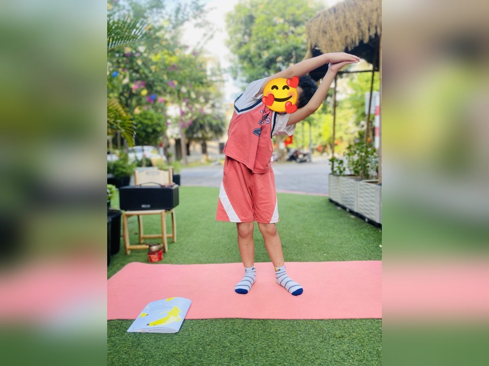
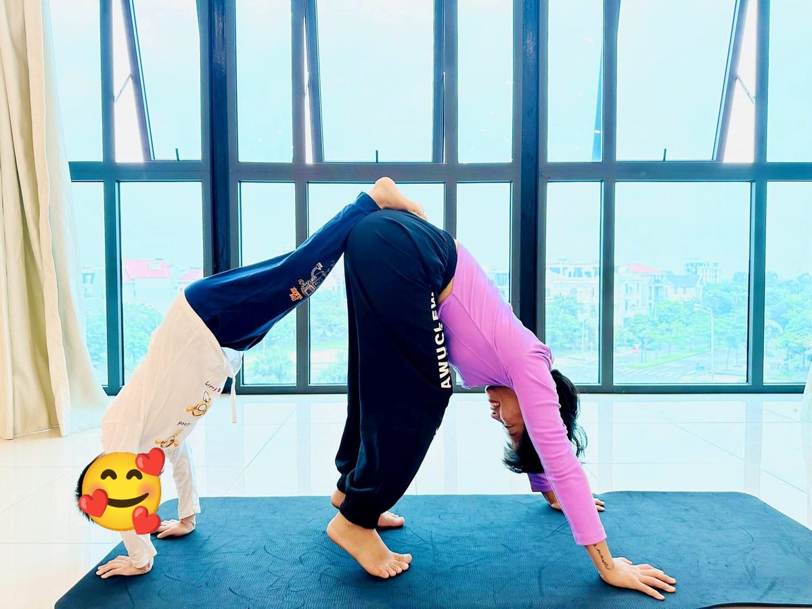
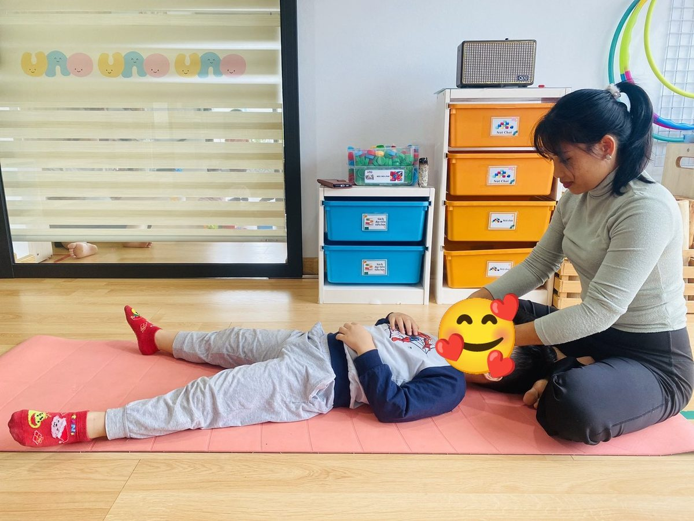

Sức khỏe
Ứng dụng yoga cân bằng phục hồi cho bé hay ốm vặt, sức đề kháng yếu

Tuần này sổ mũi. Tuần sau ho. Vừa khỏi được mấy hôm lại sốt.
Nhiều mẹ nhắn cô với giọng rất mệt: “Con em đi lớp được hai tuần thì nghỉ một tuần, cô ạ.” Mỗi lần con ốm là một lần cả nhà mất ngủ, mẹ xin nghỉ làm, và trong lòng thêm một câu hỏi: có phải sức đề kháng của con kém quá không?
Sophia không phải bác sĩ. Bài này không thay cho lời khám của bác sĩ nhi. Cô chỉ muốn chia sẻ hai điều: điều gì là bình thường, và những gì cả nhà có thể làm mỗi ngày để cơ thể con có nền vững hơn, trong đó có yoga.
Trước hết: ốm vặt nhiều khi là chuyện bình thường
Trẻ nhỏ, nhất là năm đầu đi nhà trẻ, có thể bị cảm lạnh, viêm họng do virus khoảng 6 đến 8 lần một năm, có khi nhiều hơn, theo Viện Hàn lâm Nhi khoa Hoa Kỳ. Hệ miễn dịch của con đang “đi học” giống như con: gặp mỗi loại virus mới, nó học cách nhận ra và chống lại. Sau vài năm, đa số trẻ ốm ít dần.
Nên mục tiêu không phải là con không bao giờ ốm. Mục tiêu là con ốm nhẹ hơn, hồi phục nhanh hơn, và giữa những lần ốm, con có đủ năng lượng để chơi, ăn, ngủ và lớn.
Điều gì thật sự giúp nền sức khỏe của con
Sophia luôn nói với các mẹ: không có một tư thế nào, một loại siro nào “tăng đề kháng” thần kỳ. Có một nhịp sống. Dưới đây là những điều có nghiên cứu ủng hộ, và cũng là những điều yoga cân bằng phục hồi luôn đặt trước tư thế.
Ngủ đủ
Giấc ngủ là lúc cơ thể sửa chữa. Một nghiên cứu cho người lớn tiếp xúc trực tiếp với virus cảm lạnh thấy những người ngủ dưới 6 tiếng mỗi đêm dễ bị cảm hơn hẳn người ngủ trên 7 tiếng (Prather và cộng sự, 2015). Trẻ mẫu giáo cần khoảng 10 đến 13 tiếng mỗi ngày, trẻ tiểu học 9 đến 12 tiếng (Paruthi và cộng sự, 2016).
Rửa tay
Nghe đơn giản, nhưng rửa tay bằng xà phòng đúng cách giảm đáng kể các bệnh hô hấp và tiêu hóa trong cộng đồng (Aiello và cộng sự, 2008). Ở lớp, cô biến việc này thành trò chơi: rửa tay đủ lâu bằng hai lần hát “Happy Birthday”.
Vận động và chơi ngoài trời
Vận động vừa sức, đều đặn hỗ trợ hệ miễn dịch, trong khi gắng sức quá mức lại có thể làm cơ thể mệt thêm (Nieman và Wentz, 2019). Có một nghiên cứu ở Phần Lan rất đáng nhớ: khi các nhà trẻ thay sân bê tông bằng thảm cỏ, rêu, đất rừng cho trẻ chơi, chỉ sau 28 ngày, hệ vi sinh trên da và trong ruột của trẻ đa dạng hơn, kèm thay đổi tích cực ở một số chỉ dấu miễn dịch (Roslund và cộng sự, 2020). Đi chân đất trên cỏ, nghịch đất, chơi dưới bóng cây, không chỉ là vui.
Nắng sớm và vitamin D
Một phân tích tổng hợp lớn cho thấy bổ sung vitamin D giúp giảm nguy cơ nhiễm trùng hô hấp cấp, rõ nhất ở những người đang thiếu (Martineau và cộng sự, 2017). Nắng sáng sớm là nguồn tự nhiên. Còn bổ sung bao nhiêu, có cần không, bố mẹ hỏi bác sĩ, đừng tự cho con uống liều cao.
Bữa ăn thật
Rau củ nhiều màu, trái cây, đạm đủ, ít đồ ngọt, ít đồ chiên rán, ít nước ngọt. Bữa ăn chậm, vui, không ép. Nếu con biếng ăn, đầy bụng, xem thêm bài bé biếng ăn, đầy bụng.
Tiêm chủng đầy đủ
Đây là lá chắn đã được chứng minh. Yoga, lối sống lành mạnh đi cùng, không thay thế tiêm chủng theo lịch.
Tâm bình an
Căng thẳng kéo dài làm hệ miễn dịch yếu đi, ở người lớn đã được ghi nhận rõ (Segerstrom và Miller, 2004). Trẻ con cũng có căng thẳng: bị la mắng, thiếu ngủ, lịch học dày, màn hình buổi tối. Một em bé được thở chậm, được ôm, được chơi, có một hệ thần kinh dễ nghỉ ngơi hơn.
☀️ Một ngày khỏe của bé
Đánh dấu những điều hôm nay con đã có. Không cần đủ hết. Mỗi ngày thêm một điều là tốt rồi. Trang sẽ nhớ trên máy của bạn.
Mười phút yoga buổi sáng cho cả nhà
Bài này cô chọn tư thế đơn giản, vừa sức, tập trên cột sống và hơi thở: những gì làm cơ thể ấm lên, máu lưu thông, lồng ngực mở ra, và tâm vui. Bấm Bắt đầu, mỗi khi chuyển phần đồng hồ kêu một tiếng chuông.
⏱ Mười phút yoga buổi sáng


Nếu được, cô hay gợi ý kết thúc bằng năm phút chơi đùa trên cỏ, chân trần. Không cần đếm, không cần đúng. Vui là được.
Khi con đang ốm: nghỉ là một phần của yoga
Đây là điều cô muốn nhắc thật rõ. Khi con đang sốt, mệt, ho nhiều, không tập tư thế. Cơ thể con đang dồn sức để chống bệnh. Việc của mình là cho con nghỉ, uống đủ nước, ăn nhẹ, ngủ nhiều, và theo dõi theo hướng dẫn của bác sĩ.
Lúc ấy, yoga chỉ còn là những điều rất nhẹ: nằm nghe mẹ kể chuyện, thở bụng chậm, mẹ xoa lưng, xoa bàn chân cho con. Khi con hết sốt, ăn ngủ lại bình thường, mới quay lại tập từ từ.

Yoga cân bằng phục hồi trên cả năm thể
- Thân: vận động vừa sức mỗi ngày, ngủ đủ, ăn thật, chạm đất, tắm nắng.
- Hơi thở: thở mũi, thở bụng chậm, không nín thở.
- Tâm: ít la mắng, nhiều ôm ấp. Một em bé bình an thì ngủ sâu hơn.
- Trí: lịch sinh hoạt đều, đủ thời gian chơi tự do, không quá tải học thêm.
- Tinh thần: kết nối với thiên nhiên, với gia đình. Thấy mình được thương.
Trong tám bậc của yoga có saucha, sự trong sạch: thân sạch (rửa tay, tắm rửa), nhà thoáng, bữa ăn lành, và lời nói trong. Với trẻ, saucha bắt đầu bằng đôi bàn tay sạch trước bữa ăn, và một ngôi nhà không khói thuốc lá.
Khi nào cần đưa con đi khám ngay
Hãy đưa con đến bác sĩ hoặc cơ sở y tế nếu:
- Trẻ dưới 3 tháng tuổi bị sốt.
- Sốt cao từ 39 độ trở lên, hoặc sốt kéo dài quá 2 đến 3 ngày, hoặc sốt kèm co giật.
- Thở nhanh, thở rít, rút lõm lồng ngực, môi tím tái.
- Li bì, khó đánh thức, quấy khóc không dỗ được.
- Dấu hiệu mất nước: ít tiểu, môi khô, khóc không có nước mắt.
- Đau tai, chảy mủ tai, đau họng nhiều không nuốt được.
- Phát ban kèm sốt, hoặc ban không mất khi ấn.
Và nên khám kỹ hơn nếu con ốm liên tục kèm chậm tăng cân, nhiễm trùng nặng lặp lại (viêm phổi nhiều lần trong năm), hoặc ho, khò khè kéo dài. Bác sĩ có thể tìm ra những nguyên nhân như hen, dị ứng, thiếu vi chất, cần điều trị riêng.
Điều Sophia muốn gửi bố mẹ
Mỗi lần con ốm, mẹ hay tự hỏi mình đã làm sai điều gì. Cô mong mẹ bớt trách mình một chút. Cơ thể con đang học. Mình chỉ cần cho nó một mái nhà tốt để học: giấc ngủ, nắng, đất, bữa ăn thật, hơi thở chậm và vòng tay ấm.
Phần còn lại, hãy tin vào sức sống của con. Và tin vào bác sĩ khi cần.
Hít vào, ánh nắng sớm. Thở ra, một ngày khỏe mạnh.
🌿 Muốn con tập yoga ngoài trời cùng cô?
Bố mẹ nhắn cô Sophia để hỏi lịch lớp yoga trẻ em và lớp yoga bố mẹ cùng con. Thầy cô muốn đưa nhịp sống lành mạnh này vào lớp mình, Sophia hướng dẫn trong khóa Đào tạo Huấn luyện viên Yoga trẻ em.
Đọc thêm: Ứng dụng yoga cân bằng phục hồi cho bé ngủ ngon, Ứng dụng yoga cân bằng phục hồi cho bé biếng ăn, đầy bụng và Ứng dụng yoga cân bằng phục hồi cho bé mê màn hình.
📚 Tài liệu tham khảo
- American Academy of Pediatrics. Children and colds. HealthyChildren.org.
- Prather AA, Janicki-Deverts D, Hall MH, Cohen S. Behaviorally assessed sleep and susceptibility to the common cold. Sleep, 2015;38(9):1353–1359.
- Paruthi S, Brooks LJ, D’Ambrosio C, et al. Recommended amount of sleep for pediatric populations. Journal of Clinical Sleep Medicine, 2016;12(6):785–786.
- Aiello AE, Coulborn RM, Perez V, Larson EL. Effect of hand hygiene on infectious disease risk in the community setting: a meta-analysis. American Journal of Public Health, 2008;98(8):1372–1381.
- Nieman DC, Wentz LM. The compelling link between physical activity and the body’s defense system. Journal of Sport and Health Science, 2019;8(3):201–217.
- Roslund MI, Puhakka R, Grönroos M, et al. Biodiversity intervention enhances immune regulation and health-associated commensal microbiota among daycare children. Science Advances, 2020;6(42):eaba2578.
- Martineau AR, Jolliffe DA, Hooper RL, et al. Vitamin D supplementation to prevent acute respiratory tract infections: systematic review and meta-analysis of individual participant data. BMJ, 2017;356:i6583.
- Segerstrom SC, Miller GE. Psychological stress and the human immune system: a meta-analytic study of 30 years of inquiry. Psychological Bulletin, 2004;130(4):601–630.
- World Health Organization. Guidelines on physical activity, sedentary behaviour and sleep for children under 5 years of age, 2019.